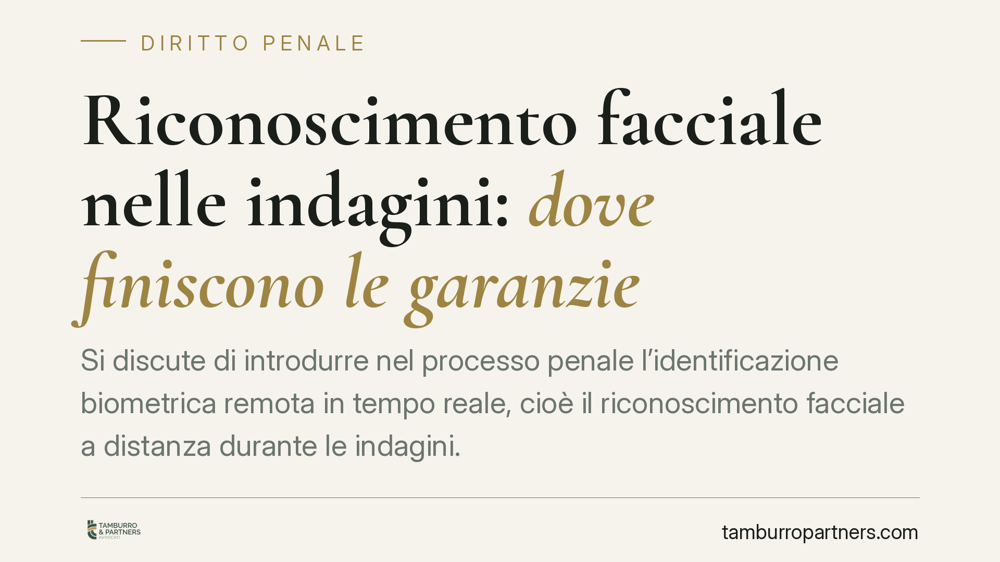

Riconoscimento facciale nelle indagini: dove finiscono le garanzie
Si discute di introdurre nel processo penale l'identificazione biometrica remota in tempo reale, cioè il riconoscimento facciale a distanza durante le indagini. Il nodo è chi autorizza e quando: controllo preventivo del giudice o convalida successiva. La questione tocca direttamente l'utilizzabilità della prova e i diritti della difesa. Ecco lo stato del quadro normativo, ancora in evoluzione, e cosa monitorare.

Il tema in discussione
L'identificazione biometrica remota in tempo reale consiste nel confrontare, a distanza e in modo automatizzato, i tratti del volto ripresi da telecamere con banche dati di riferimento. Applicata alle indagini penali, è una tecnica di enorme impatto investigativo e, per le stesse ragioni, di forte incidenza sui diritti fondamentali.
Il dibattito riguarda l'ipotesi di disciplinare espressamente questo strumento nel codice di procedura penale. Allo stato, occorre premettere una cautela: alcuni riferimenti circolati nel dibattito — tra cui una nuova disposizione dedicata e precise date di entrata in vigore — non risultano ad oggi confermati come diritto vigente. Trattiamo quindi la materia come quadro in evoluzione, evitando di dare per acquisiti testi e numerazioni non verificabili.
Inquadramento normativo
Il punto di riferimento certo è il Regolamento UE 2024/1689 (AI Act). Qui va corretto un equivoco diffuso: l'identificazione biometrica remota in tempo reale in spazi accessibili al pubblico a fini di attività di contrasto (*law enforcement*) non è genericamente una pratica "ad alto rischio". È, in linea di principio, una pratica vietata ai sensi dell'art. 5 del Regolamento, ammessa solo in eccezioni tassative — ad esempio ricerca mirata di vittime, prevenzione di minacce specifiche e gravi, individuazione di autori di reati determinati — e comunque subordinata a garanzie stringenti, spesso ad autorizzazione giudiziaria o amministrativa preventiva.
Diverso è il caso dei sistemi biometrici classificati come ad alto rischio (Allegato III), che restano ammessi ma soggetti a obblighi di conformità. La confusione tra le due categorie non è un dettaglio: cambia il regime di ammissibilità dello strumento e, a cascata, la valutazione sull'utilizzabilità del suo esito nel processo.
Sul versante interno, qualsiasi disciplina futura dovrà misurarsi con l'assetto delle garanzie già noto in materia di mezzi di ricerca della prova ad alta invasività. Il modello di riferimento è quello delle intercettazioni: autorizzazione del giudice come regola e, nei casi di urgenza, decreto motivato del pubblico ministero soggetto a convalida successiva del giudice, secondo lo schema dell'art. 267 c.p.p.. È su questo baricentro — controllo preventivo o convalida ex post — che si gioca il livello effettivo di tutela.
Implicazioni pratiche
Per la difesa, il punto sensibile è dove si colloca il filtro del giudice. Se il ricorso allo strumento fosse consentito in urgenza su iniziativa del pubblico ministero o della polizia giudiziaria, con convalida solo successiva, lo spazio per contestare i presupposti si sposterebbe a valle, quando l'attività è già stata compiuta.
Da qui una conseguenza concreta: la tenuta dell'urgenza diventa terreno di contestazione. Se i presupposti che giustificano il ricorso senza previa autorizzazione non reggono, l'esito dell'identificazione può essere aggredito sul piano dell'utilizzabilità della prova. Il collegamento è diretto: un vizio nel titolo che legittima l'atto si riflette sulla spendibilità del risultato in giudizio.
A ciò si aggiunge il livello europeo. Uno strumento eventualmente impiegato al di fuori delle eccezioni tassative dell'art. 5 dell'AI Act non sarebbe soltanto irregolare rispetto alla disciplina interna, ma collocato su un terreno di divieto sovranazionale, con ricadute che la difesa potrà valorizzare.
Cosa fare in concreto
- Verificare il titolo dell'atto: individuare quale provvedimento ha legittimato l'identificazione biometrica e se vi sia stata autorizzazione preventiva o convalida successiva.
- Contestare i presupposti dell'urgenza: quando l'attività sia stata svolta senza previo vaglio del giudice, esaminare la motivazione sulla sussistenza e attualità dell'urgenza.
- Sollevare il profilo dell'utilizzabilità: collegare eventuali vizi del titolo alla spendibilità processuale dell'esito.
- Richiamare l'AI Act nella corretta qualificazione: valutare se lo strumento ricada tra le pratiche vietate ex art. 5 Reg. UE 2024/1689 o rientri in un'eccezione tassativa.
- Monitorare l'evoluzione normativa: seguire l'iter di eventuali interventi legislativi interni prima di fondare strategie su testi non ancora vigenti.
---
*Contributo informativo a cura di Tamburro & Partners — Avv. Giuseppe Tamburro. Non costituisce parere legale.*
Ogni condominio ha una storia a sé.
Se gestisci un'amministrazione e vuoi un confronto su una specifica questione condominiale, scrivi allo studio. Ti rispondiamo entro un giorno lavorativo.